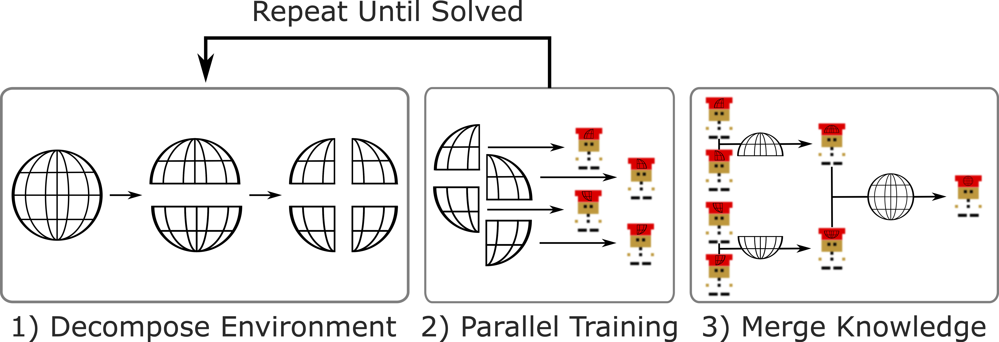
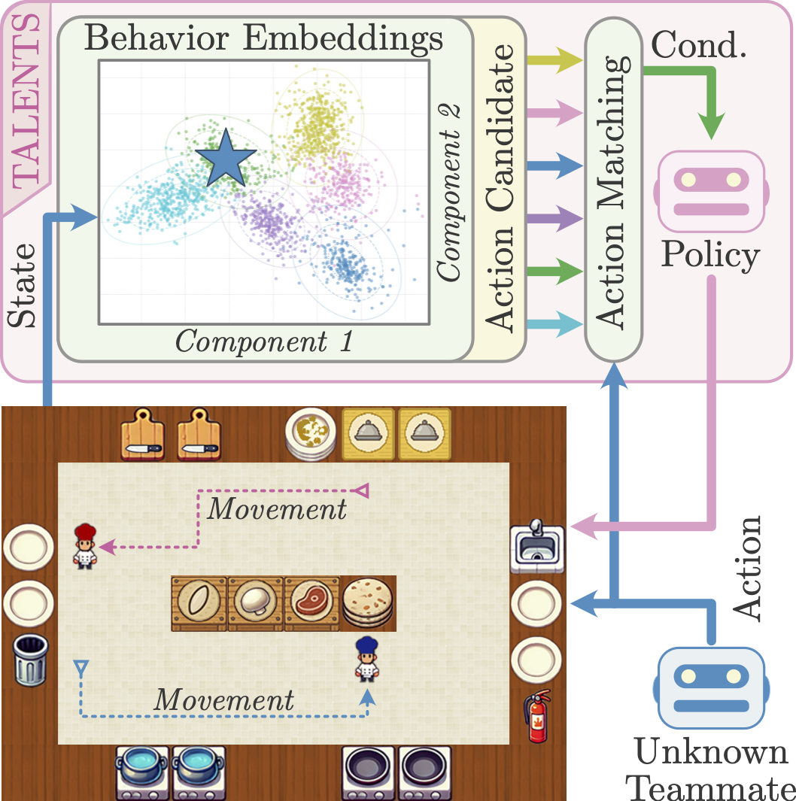
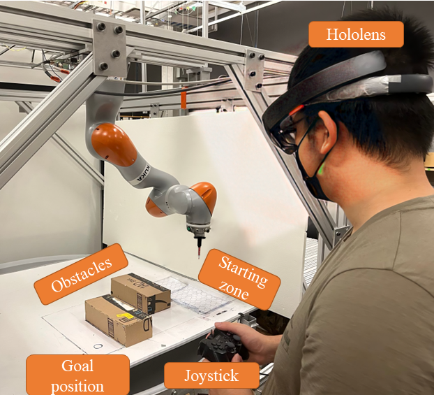
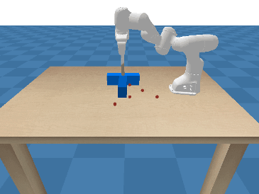
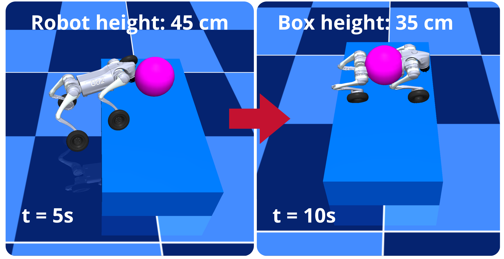

|
BENJI LI Hello! I am a MS Robotics student at Carnegie Mellon University, advised by Prof. Katia Sycara. Previously, I completed my undergraduate studies in mechatronics engineering at the University of British Columbia, where I was advised by Prof. Mike Van der Loos in the CARIS Lab. |

RESEARCHI work on learning-based algorithms to train agents for robust performance in environments with multiple interacting agents, including multi-robot systems and human-robot collaborative teams. To accomplish these tasks, I utilize tools from multi-agent reinforcement learning (MARL), imitation learning, and optimal control. In particular, I am currently working on developing methods that equip robots with both adaptivity and proactivity in their interactions in uncertain environments with evolving tasks and complex imperfect teammates. |
|
 |
Decompose-and-Merge Reinforcement Learning for Complex Tasks
Andrew Ni, Benjamin Li, Hossein Nourkhiz Mahjoub, Vaishnav Tadiparthi, Katia Sycara, Woojun Kim Under Review, 2026 |
|
|
Adaptively Coordinating with Novel Partners via Learned Latent Strategies
Benjamin Li, Shuyang Shi, Lucia Romero, Huao Li, Yaqi Xie, Woojun Kim, Stefanos Nikolaidis, Michael Lewis, Katia Sycara, Simon Stepputtis NeurIPS, 2025 paper / code |
|
 |
Modeling Latent Partner Strategies for Adaptive Zero-Shot Human-Agent Collaboration
Benjamin Li, Shuyang Shi, Lucia Romero, Huao Li, Yaqi Xie, Woojun Kim, Stefanos Nikolaidis, Michael Lewis, Katia Sycara, Simon Stepputtis GenAI-HRI Workshop @ RSS, 2025 🏆 Best Paper Award paper / code |
|
 |
How Can Everyday Users Efficiently Teach Robots by Demonstration?
Maram Sakr, Zhikai Zhang, Benjamin Li, Haomiao Zhang, HF Machiel Van der Loos, Dana Kulić, Elizabeth Croft ACM Transactions on Human-Robot Interaction, 2025 paper / code |
Projects |
|
 |
Trajectory-Guided Diffusion Policy for Manipulation
CMU 10-703 Deep Reinforcement Learning, 2025 report Diffusion-based imitation learning method for non-prehensile robotic manipulation, using learned value-based guidance to steer denoising gradients toward desired goals. |
|
 |
Whole-Body MPPI Control of a Wheeled Quadruped
CMU 16-745 Optimal Control and Reinforcement Learning, 2025 report Whole-body Model Predictive Path Integral (MPPI) control of a wheeled quadruped robot (Unitree Go2W) in MuJoCo, enabling real-time dynamic locomotion across various terrains and obstacles. |
|
Template forked from Jon Barron's website. |